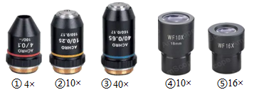
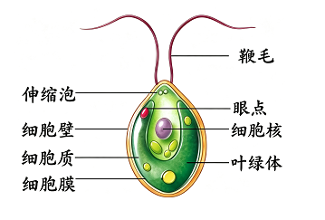

2026年北京平谷区初中学业合格考试生物试卷 · 选择题 第1、2、3、4、5题 · 对应解析
1. 北京的市树和市花分别是（ ）
A. 松树、梧桐；玉兰、牡丹
B. 雪松、梧桐；串红、丁香
C. 国槐、侧柏；月季、菊花
D. 银杏、毛白杨；丁香、牡丹
【答案】C
【解析】
【详解】A．松树、梧桐并非北京市市树，玉兰、牡丹也不是北京市市花，A错误。
B．雪松、梧桐并非北京市市树，串红、丁香也不是北京市市花，B错误。
C．北京市的市树为国槐、侧柏，市花为月季、菊花，C正确。
D．银杏、毛白杨并非北京市市树，丁香、牡丹也不是北京市市花，D错误。
2. 细胞中控制生物发育和遗传的结构是（ ）
A. 细胞壁B. 细胞膜C. 细胞质D. 细胞核
【答案】D
【解析】
【分析】细胞核含有遗传物质，是细胞代谢和遗传的控制中心，负责生物的发育和遗传。
【详解】A．细胞壁主要起保护和支持作用，与遗传无关，故A不符合题意。
B．细胞膜控制物质进出细胞，不涉及遗传调控，故B不符合题意。
C．细胞质是细胞代谢的主要场所，但遗传控制由细胞核完成，故C不符合题意。
D．细胞核含有DNA，是遗传信息库，控制生物的发育和遗传，故D符合题意。
故选D。
3. 下图①—⑤为某光学显微镜的5个镜头，①、②、③为物镜，④、⑤为目镜 (×表示放大倍数)。若要使视野中观察到的单个细胞体积最大，在下列目镜和物镜的组合中应选择（ ）

A. ①和④B. ②和⑤C. ③和④D. ③和⑤
【答案】D
【解析】
【详解】显微镜放大倍数=目镜放大倍数×物镜放大倍数。显微镜放大倍数越大，细胞数目越少，细胞越大；反之，放大倍数越小，细胞数目越多，细胞越小。①和④放大了40倍，②和⑤放大了160倍，③和④放大了400倍，③和⑤放大了640倍。可知，要使视野中观察到的单个细胞体积最大，目镜和物镜的组合中应选择③和⑤，放大的倍数最大。D符合题意，ABC不符合题意。
4. 衣藻是生活在水中的单细胞藻类能独立完成生命活动。下列叙述错误的是（ ）

A. 身体由一个细胞构成
B. 在细胞内完成食物的消化
C. 通过神经进行调节
D. 自己制造有机营养
【答案】C
【解析】
【详解】A．衣藻属于单细胞藻类，整个生物体只由一个细胞构成，A正确。
B．衣藻是单细胞生物，所有生命活动（包括物质代谢、营养处理）都在这一个细胞内完成，B正确。
C．神经是多细胞动物分化出的结构，衣藻仅为一个细胞，没有神经系统、神经结构，无法通过神经进行调节，C错误。
D．衣藻细胞内有叶绿体，可以通过光合作用合成有机物，属于自养生物，D正确。
5. 一朵百合花在结构层次上属于（ ）
A. 细胞B. 组织C. 器官D. 植物体
【答案】C
【解析】
【分析】器官是由几种不同的组织构成的，这些组织按一定的次序联合起来，形成具有一定功能的结构。
【详解】植物体的结构层次由小到大依次是细胞→组织→器官→植物体。常见的绿色开花植物由根、茎、叶、花、果实、种子六大器官组成。器官是由几种不同的组织构成的，这些组织按一定的次序联合起来，形成具有一定功能的结构。一朵百合花是由几种不同的组织构成的，具有一定功能的结构，都属于器官。故选C。
【点睛】解答关键是理解器官的概念。